Dashboard
Global overview. Resource gauges, infrastructure totals, and per-cluster health at a glance.
Real-time Proxmox VE monitoring with a sci-fi cyberpunk UI. Six views over VMs, containers, nodes, storage, and Ceph — with API failover across nodes, on a single Linux box.
The installer creates a dedicated jt-proxense user, drops a hardened systemd unit, and starts the service.
Requires sudo and Python 3.10+.
/opt/jt-proxense/config.yaml with your PVE clusters, then sudo systemctl restart jt-proxense. Default URL: http://<your-server>:8098/.
Recorded against five PVE clusters running side by side. WebSocket push, no polling on the client.
Switch between views with a keystroke. Each is a different lens on the same live state.
Global overview. Resource gauges, infrastructure totals, and per-cluster health at a glance.
ECG-style metric monitors per node. CPU / memory / I/O traced as live waveforms.
Every VM as a coloured tile. Filter by state, sort by load, group by node — at any density.
Anomaly-detection radar. Spikes, threshold breaches, and offline nodes pop into view.
Treemap of every storage pool, sized by capacity, coloured by usage. Pressure becomes visible.
Ceph cluster topology with live IOPS. OSDs, pools, and recovery state on one canvas.
Opt-in authentication, audit log, role-based access, VM & LXC lifecycle, all under the same cyberpunk skin. Default behavior unchanged from v0.1 — flip a flag to enable each layer.
Argon2id passwords + 12 h sessions, optional PAM backend (system accounts), TOTP 2FA with 8 backup codes. Per-IP brute-force rate limit.
Append-only SQLite audit trail. Every login, role change, config edit, VM action recorded. CSV export, date filter, expandable detail rows.
Three roles (viewer / operator / admin), scoped per-cluster AND per-VM. Match by name (web-*) or tag (tag:prod). Highest-rank match wins.
start / stop / shutdown / reboot / suspend / migrate. Bulk operations across mixed VM and CT vmids in one request. Disabled by default — explicit opt-in.
If you ever lock yourself out: jt-proxense auth disable works without the service running. Reset passwords, clear lost authenticators, fix bad config — all offline.
pytest covers migrations, auth, audit triggers, role gating, VM + CT dispatch, RBAC, mocked PVE. Runs in CI on every push.
Live framebuffer thumbnails, cross-cluster migrate, file-level storage browsing — all built on the same auth + audit foundation as v0.2.
Live framebuffer screenshot for every running guest, group-able by node / type / tag. QEMU via a minimal RFB 3.8 client; LXC via termproxy + a vt100 emulator so CT cards show real shell output, not black boxes. Click any card for a full-size view with a CRT-static loading effect.
Wizard that introspects the source VM, picks an endpoint on the target cluster, fetches the TLS fingerprint, and lays out disk + NIC mappings. Validation, dry-run pre-checks, online / offline modes, and bandwidth limits. Admin-only; QEMU-only (PVE's API limit). Lock-recovery toast with copy-paste qm unlock hint when migration fails.
Click any file-level storage → tabs by content type (Backups / ISO / CT templates / Snippets / Import / Disk images / CT root) — only the tabs the storage actually carries. Sortable list, search, delete with audit. Block-level storages (RBD / LVM / ZFSpool) get a list-only view.
InfluxDB v2 endpoint at /api/v2/write (token-auth, gzip-tolerant). Per-host ring buffer of the most recent samples, exposed via /api/telegraf/{hosts,host}. Bring your own Telegraf outputs.influxdb_v2 on each PVE host, get supplemental metrics surfaced alongside the API-polled ones.
Click any tile to enlarge.
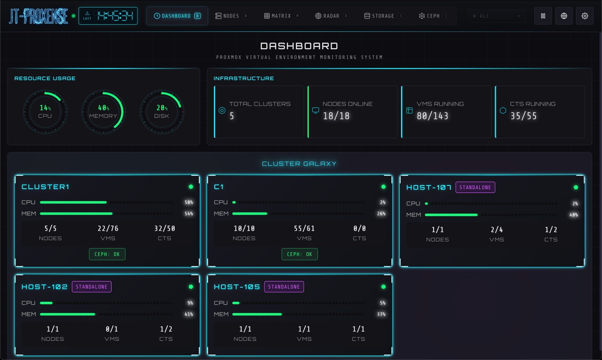
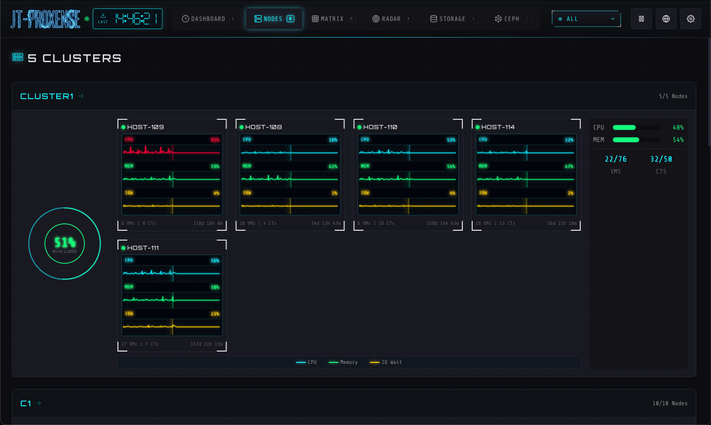
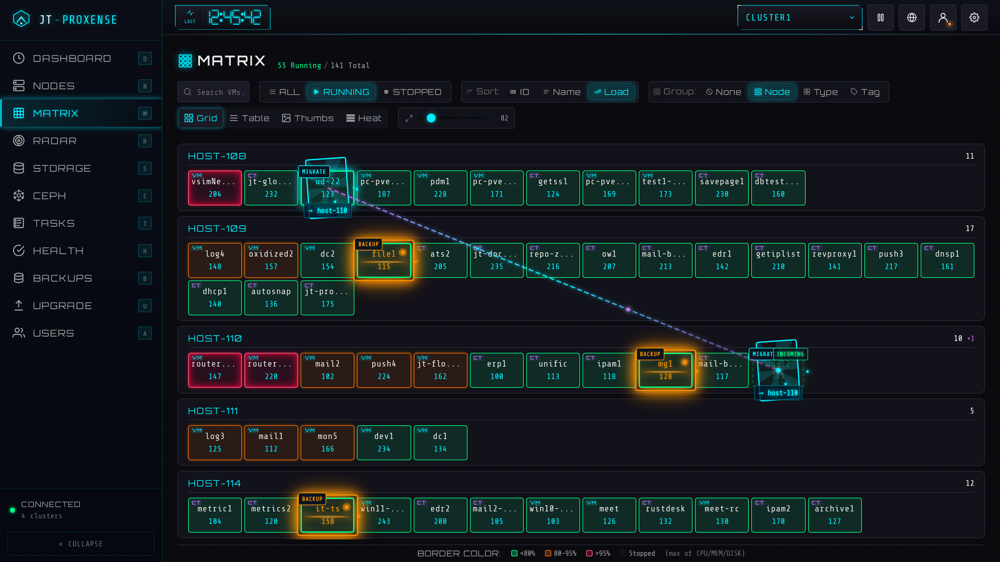
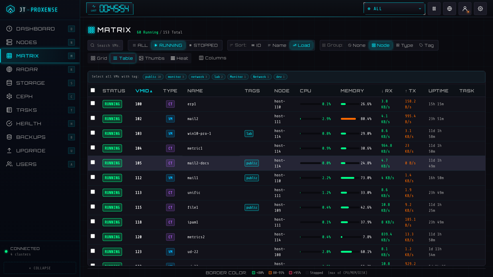
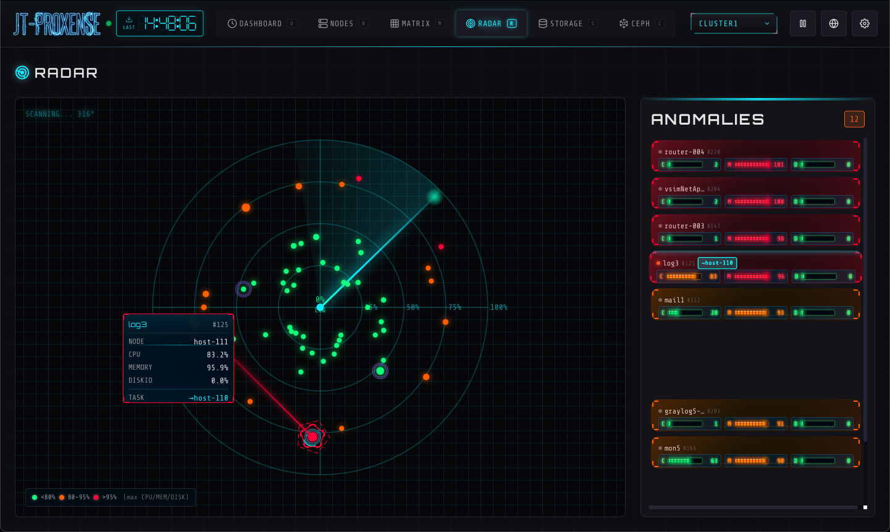
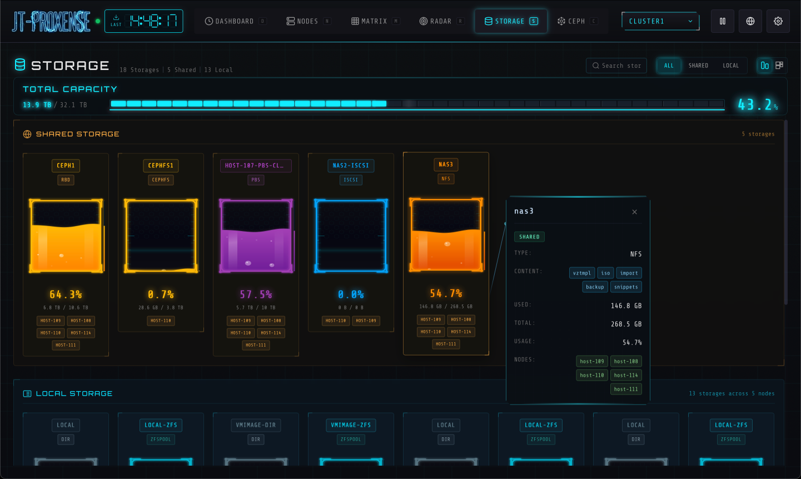
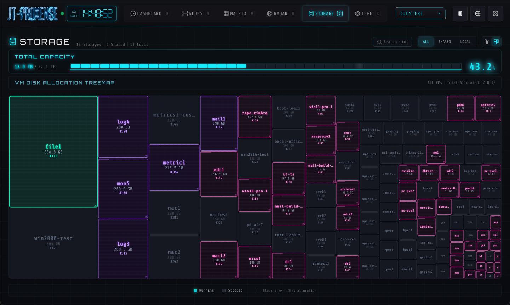
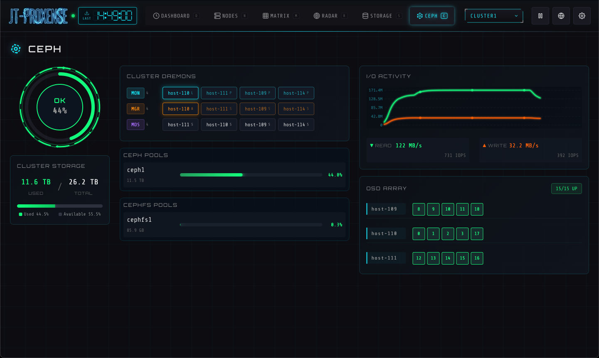
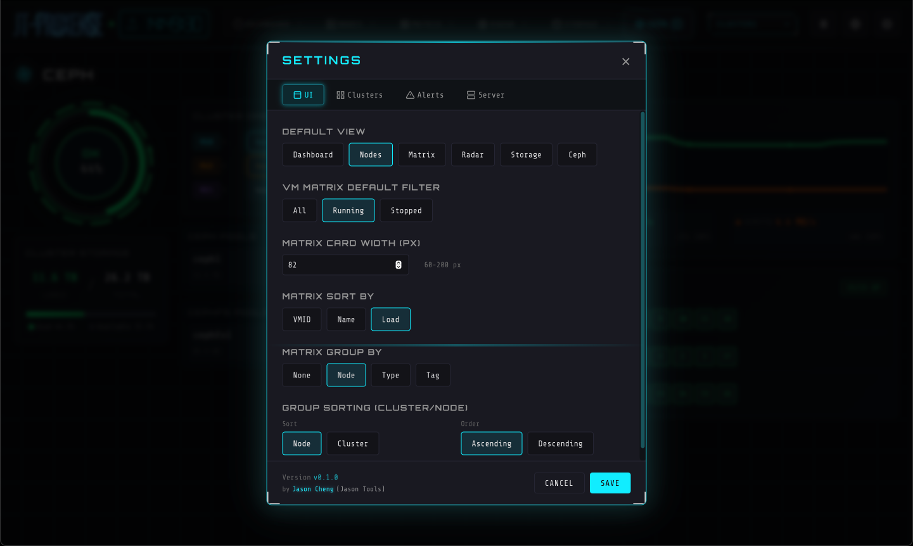
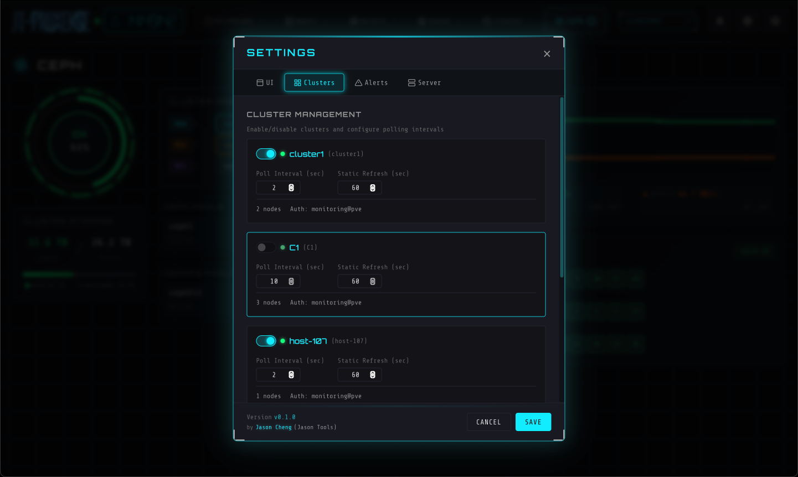
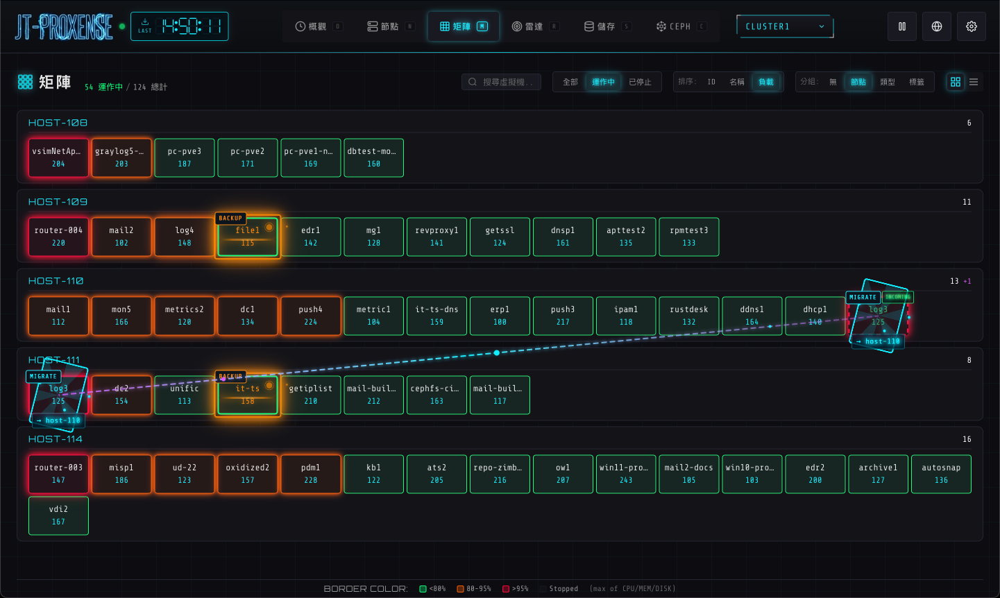